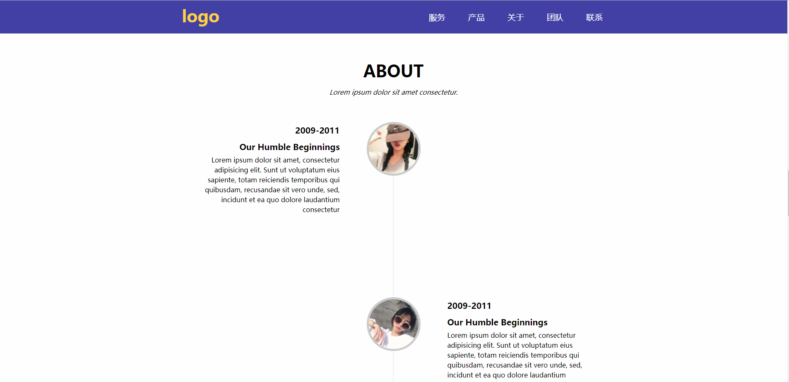

杨雨蒙
Details.联系方式
- Tel: 180-2649-3873
- Email: 18026493873@163.com
- 微信: yym13141222
- QQ: 1614527443
Skill.技能清单
-
HTML/CSS
掌握HTML5/CSS3新特性，包括但不限于动画、3D转换、Flex布局、CSS3伪类等，能够编写语义化的 HTML，模块化的 CSS，完成较复杂的布局，像素级还原设计稿。
掌握REM、EM、媒体查询，可以实现移动端页面的响应式。
-
JavaScript
掌握一些重要的概念如原型、闭包、原型链、面向对象、异步等。
掌握DOM操作、Ajax原理。
熟悉部分ES6语法，并能在实际项目中应用。
能运用模块化、面向对象的方式编程。
熟悉Web组件开发，有自己的组件库。
-
jQuery
熟悉jQuery的应用，包括但不限于jQuery选择器、DOM操作、$.ajax、jQuery插件封装等。
-
Vue
了解Vue框架的基本原理，有Vue开发经验。
-
Webpack/Gulp
了解Webpack和Gulp的操作流程，有实际应用经验。
-
Node.js
了解Web服务器相关知识，如Node.js。
熟悉Http协议。
其他
Profile.基本信息
- 杨雨蒙|男|1994
- 芜湖联大
- 工作经验：前端经验
- Github:https://github.com/yym-yumeng123
- 简书博客:https://www.jianshu.com/u/5802949cb777
- 我是一个对前端和IT由衷热爱的前端工程师。 具有很强的学习能力和技术敏感度，有强烈的责任心和进取心，乐于学习和技术分享。 我目前正在寻找前端工程师岗位的工作机会，希望借此为贵司献上我的一点绵薄之力，快招我到碗里来吧！
Experience.项目经验
-
YYM音乐播放器 源代码 预览
非常好看的 HTML5 移动端音乐播放器，使用ajax技术获取后台音乐数据以及歌词播放,随屏幕变化做自适应布局,使用html5+css3布局,可根据自己喜欢的曲目选择不同的播放列表
技术栈：jquery + Ajax + CSS3 + Html5 + Flex

-
Node.js在线备忘录 源代码 预览
由于在大学期间特别喜欢奶茶店里面的留言墙,所以做了一个基于Express框架开发的在线备忘录，使用Webpack进行依赖管理和打包。
技术栈：Node.js + Express + Webpack

-
移动端网易云播放器 源代码 预览
特别喜欢网易云的UI设计,所以自己模仿写了一个播放器来实现自己私有的歌曲播放,使用jquery+leanCloud来模拟后台真实数据,使用HTML5和CSS3写了播放页面磁头动画和黑胶旋转的动画,使其更加逼真
用户可以在里面播放里面喜欢的歌曲,也可以使用搜索功能来查找自己喜欢的歌曲
技术栈：javaScript + jQuery + LeanCloud

-
Vue重构部分有赞商城 源代码 预览
使用 Vue 重构有赞商城
RAP来Mock后台数据
222
技术栈： Vue + Webpack + axios + Vue-router + vuex

-
网站主页 源代码 Demo
实现的是一个网站的主页，主页实现的效果有：全屏自动轮播、图片懒加载、图片瀑布流布局、ajax 异步获取数据、form表单等。
技术栈： HTML + CSS + JavaScript + fontface + Flex
 -
CSS3新技术实现特殊效果 源代码 Demo
-
1. 太极图
很好看的CSS3特效，可以选择样式，主要应用了transform、animation等CSS3新技术。
-
2. 3D轮播
轮播也可以做成3D效果哦，js操作逻辑和2D轮播基本相同，难点在CSS3新属性的熟练掌握程度。
-
3. 旋转的立方体
使用CSS3新特性实现的CSS3特效。
-
4. Newspaper
很好看的报纸页面，应用了Flex布局。
-
5. 页面平滑过渡效果
这里使用了Fontface实现特殊图标，使用了Html5和CSS3新特性实现特殊效果。
-
6. 仪表盘
很好玩的js简单特效，可以控制的仪表盘，主要应用了DOM操作，事件绑定等。
-
-
Components.组件库 源代码 Demo
-
1. Tab 组件
面向对象 + jquery方式。
面向对象 + 原生js方式。
面向对象 + 原生js方式，HTML结构由js拼接完成。
-
2. 轮播组件
图片轮播的利器，亦可用于首页全屏轮播。
-
3. Datepicker
应用了jquery库。
HTML结构由js拼接完成，代码简洁逻辑清晰，便于引用和维护。
样式可以根据需求自己设定。
-
4. Modal 组件
同一页面下的多种Modal仅用一套方案实现。
应用了jquery库。
-
5. Pager 组件
分页组件，适用于多页面切换。
用原生js实现，无任何依赖。
-
6. FullPage 组件
可用于网页幻灯片制作，全屏播放
-
7. 瀑布流组件
应用了jquery库。
使用ajax获取数据。
-
8. 懒加载组件
实现页面懒加载，节省资源。
-
-
中建一局集团第二建筑有限公司
2016/8~2017/6
中国建筑工程总公司2016年名列“世界500强第27位”，中建一局为其核心子企业。中国建筑的经营业绩遍布国内及海外一百多个国家和地区，涉及工程建设、投资开发、勘察设计等多个领域。
主要业绩:1. 由我完成的机电专业BIM模型作为入选一局集团作品集，用于参加“龙图杯”等多项国家级BIM大赛(“龙图杯”已经过了初评阶段)。
2. 应用BIM技术进行图纸深化设计，在经过甲方专家论证后通过后，用于指导施工。
个人项目
开源项目
工作经历
Education.教育背景
-
中南大学 /本科
2012.9-2016.6